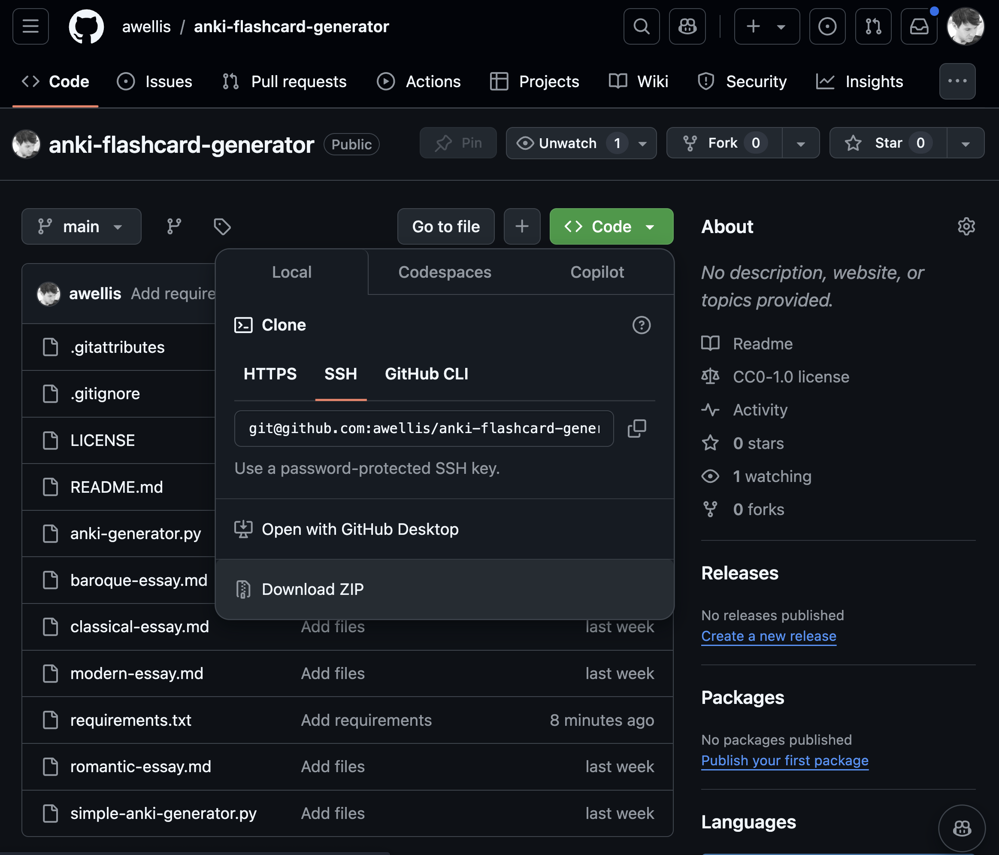

Generate Anki flashcards
Setup
To get started, you can clone the repository containing the project files:
git clone https://github.com/awellis/anki-flashcard-generatoror simply download the zip file from my Github repository.

Once you cloned the repository, or downloaded and unzipped the zip file, you will find the following files:
assets/baroque-essay.md
assets/classical-essay.md
assets/romantic-essay.md
assets/modern-essay.mdThese files contain the teaching material for the four musical eras, based on which we will generate the flashcards.
generate-anki-flashcards.pyThis file contains a Python script to get you started.
Tasks
First, you will to set up an LLM client. We will use the openai Python package to connect to an OpenAI model.
- import the
openaipackage - import the
dotenvpackage to load the API key from the.envfile - set up the client with your OpenAI API key
- read one of the essay files, and print the contents
Now you can think about how you can extract pairs of questions and answers from the teaching material. You will need to write a suitable prompt, consisting of a system message and a user message, to guide the LLM in extracting the questions and answers.
- write a prompt to extract pairs of questions and answers from the teaching material
- call the LLM with the prompt, and print the result
- try out both GPT-4o and GPT-4o Mini
- try out different parameters settings for the LLM call (e.g.
temperature,top_p)
- use structured outputs to control the format of the LLM’s response: Define a
pydanticmodel to describe the format of the LLM’s response - call the LLM with the structured output format
- write a function to call the LLM with the prompt and an arbitrary text
- call the function with the prompt, and print the result
- write the results to a CSV file. Code is provided for you.
- write a loop to load all essays, extract questions and answers from all the teaching material, and write the results to a CSV file.